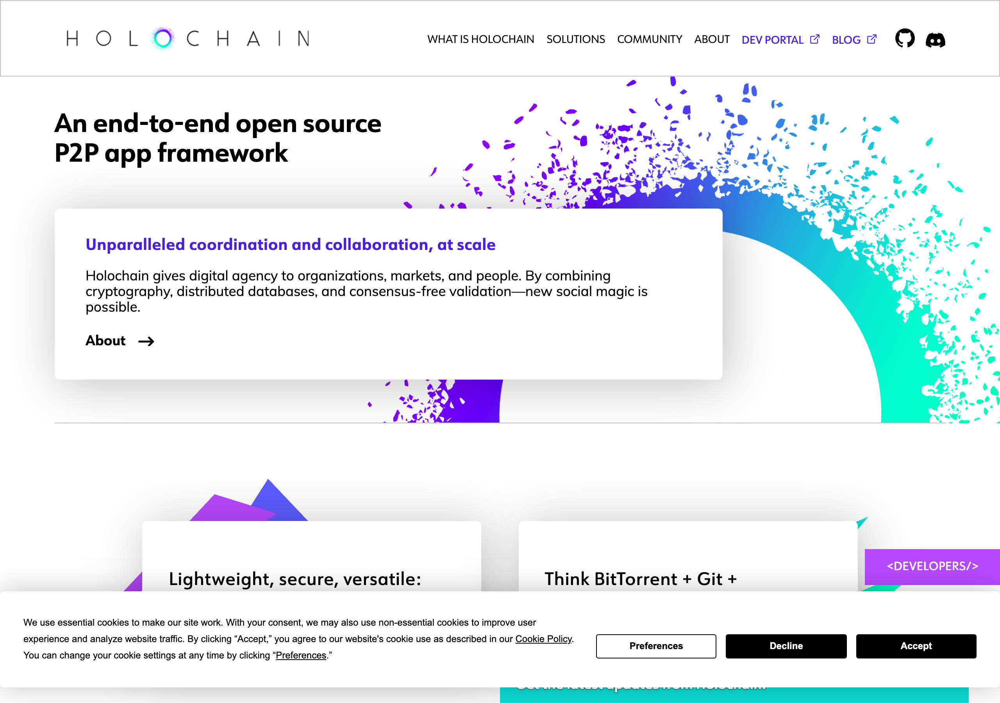

Why There Is No Global Ledger — and Why That's the Whole Point
Global agreement is a political machine — so we let each person be the final authority on their own data
The Holochain homepage — "An end-to-end open source P2P app framework." The most radical statement of the agent-centric idea: consensus-free validation, with each agent the authority over its own chain.

There is a question that quietly decides the politics of every distributed system, and most people never hear it asked. The question is: when everyone has to agree on a single shared truth, whose vote counts?
That sounds like a technical detail. It is not. It is the most political question a system can answer, because the answer determines who holds power, who is excluded, and what kind of coordination becomes possible at all. An earlier piece in this devlog made the practical case for why we adopt cryptographic protocols and skip blockchains — we take the signatures and hash-chains, we leave the global consensus. This essay goes after the deeper reason underneath that decision: not "blockchains are inconvenient," but something closer to a structural law. Global consensus is a political machine, and the machine, by its nature, re-concentrates power. If that is true, then preserving the sovereignty of the individual does not mean building a fairer global ledger. It means giving the global ledger up.
We will also be honest, before the end, about what that costs — because it costs something real, and a piece that hid the cost would not be worth reading.
Consensus is not a detail. It is a constitution.
Start with what "consensus" even means. In a distributed system, consensus is the set of rules by which a network of machines agrees on what is true — which transactions happened, in which order, and counted by whom. It is, in the most literal sense, the system's constitution: the rule for how collective truth gets made.
And every constitution has to answer the whose-vote-counts question. There is no way to dodge it. If you want a single shared ledger that strangers can trust without a referee, you need a procedure for deciding which version of history is the real one when versions disagree. That procedure is where the power lives. So look at the answers the major systems actually give, and watch the same thing happen each time.
If the answer is "whoever burns the most energy" — the proof-of-work model — then power flows to whoever can marshal the most computation. And computation at that scale is not evenly distributed; it concentrates into a small number of industrial mining operations and pools. The "one machine, one vote" dream collapses into "the most hardware wins," and a couple of pools end up able to influence which transactions are even included.
If the answer is "whoever stakes the most capital" — the proof-of-stake model — then the constitution says, in plain code, those with more money have more power. That is not a bug in the implementation; it is the design. More stake earns more rewards, which can be re-staked into more power, which earns more rewards. It is a compounding loop that concentrates control over time, and the large staking pools end up holding an outsized share of the say.
If the answer is "whoever the token-holders delegate to" — the delegated model — then you get a small set of validators wielding everyone's pooled weight, and the same gravity pulls them into a handful of dominant players who can collude, censor, or extract.
Notice the pattern. The mechanisms differ — energy, capital, delegation — but the destination is the same: a privileged class of participants who sit at the gateway to the shared truth and can, if they choose, decide what gets through. There is even a name for the value those gatekeepers quietly skim by reordering and front-running the transactions waiting to be settled. It is structural extraction, baked into the position, not a failure of character.
The structural law
Here is the claim stated as plainly as we can make it, because it is the spine of everything: global consensus requires coordination infrastructure, and coordination infrastructure tends toward centralization.
This is not a story about bad actors. The developers building these systems are, by and large, sincerely trying to decentralize. The concentration happens anyway, because it is downstream of the requirement itself. The moment you demand that a whole network agree on one ordering of one shared ledger, you have created something that must be coordinated — and coordinating it at scale rewards whoever can bring the most of the scarce resource the constitution counts. Energy, capital, or delegated weight: whatever you count, the counting concentrates.
This is why we keep saying political machine. A machine does not need malice to produce its output; it produces its output because of how it is built. Global consensus is a machine whose output, reliably, is a power hierarchy — gatekeepers who can censor, extract, or set de facto policy that no one elected and no one can appeal. The crowning irony is that this technology was born to escape the exclusion of the old financial chokepoints, and it has a real tendency to reconstruct them in new clothes: gas fees that price out the poor as surely as account minimums did, staking thresholds beyond the reach of most of the planet, governance where more tokens simply means more votes. The aesthetics changed. The gradient did not.
The unasked alternative: don't agree globally at all
Once you see consensus as a political machine, a strange and liberating question appears. We have been arguing about how the network should agree on one global truth — which voting rule is fairest. But for an enormous amount of what matters in a person's life, there is a prior question we skipped:
Why does the network need to agree at all?
Ask it about your own data. Does the planet need to vote before it is true that you had a thought, wrote a note, formed a friendship, or made a promise to someone you know? Of course not. The idea is almost absurd when stated directly. Your memories are authoritative on your own node — they are true because they are yours, recorded and signed by you, not because a quorum of strangers ratified them. The requirement of global agreement, which felt like the foundation of trust, turns out to be unnecessary — and worse than unnecessary — for the things that are most intimately a person's own.
This is the move that dissolves the problem instead of optimizing it. A blockchain asks: does the network agree this happened? The alternative asks: has each person's own record converged with the records of the people they actually interact with? The first question manufactures a dependency on the network — and therefore a gatekeeper. The second produces independence with eventual coherence, and needs no gatekeeper at all.
What makes the second question buildable is a quiet piece of mathematics: data structures whose updates can be merged in any order and still arrive at the same result. Each person writes locally, whenever and wherever they like — offline on a plane, off the grid, alone. When two people's devices later sync, their records reconcile automatically, by mathematical necessity rather than by a vote. The consequences for sovereignty are total: no validators, because no one needs special power to approve your writes; no staking, because participation costs no capital; no global ordering, because operations are local and sync when convenient; no gatekeeper, because there is no gate. Each person is the final authority over their own data, and the network is a convenience for syncing, not a requirement for existing. Two people's histories meet only where their lives actually intersect — through a relationship or a shared community — and there they converge by replaying signed events, not by submitting to a planetary referee.
That is what we mean when we say there is no global ledger here, and why that absence is not a missing feature but the entire point. There is nothing to capture, because there is no center. Sovereignty is not granted by a fair voting rule. It is a structural property of a system that never asked the world to vote in the first place.
The honest cost
Now the part a less honest essay would skip, and the part the Honesty axiom this project is built on forbids us to skip.
Giving up the global ledger gives up something genuinely valuable. The thing you lose is global ordering — a single, network-wide agreement on the sequence of events — and global ordering is exactly what some problems require. The clearest one is adversarial double-spend prevention: stopping someone from spending the same unit of value twice, in a context where the two parties actively distrust each other and share no relationship that could vouch for the truth. To know with certainty that a coin has not already been spent elsewhere, somewhere there has to be a single agreed order of events — and a single agreed order is precisely the global consensus we just walked away from. This is not a weakness we can engineer around with cleverness. It is the genuine, load-bearing thing that global consensus buys, and the merge-in-any-order mathematics cannot provide it. When order itself is the thing in dispute, "everyone writes locally and we reconcile later" is not an answer.
So the honest verdict is a boundary, not a verdict against either side. For personal data — memories, identity, relationships, a community's record of contribution among people who can build trust — the right architecture is the sovereign one. There is no adversarial ordering problem to solve, because the person is the authority and the participants already trust each other; paying the full price of global consensus there would be solving a problem you don't have at enormous cost, and inviting in the very gatekeepers you were trying to escape. But for settlement between true strangers who actively distrust each other and share no path of trust, global consensus is the right tool, because there the ordering problem is real and unavoidable. The error is never "using global consensus." The error is treating it as the default for everything decentralized, when it is the correct answer only for a genuinely narrow — if genuinely important — slice of the world.
The systems that demand a planetary vote are not wrong. They are narrow, applied broadly. We draw the line where the problem actually changes shape — and on the personal-data side of that line, the absence of a global ledger is the design's deepest feature, not its biggest gap.
Standing on others' shoulders
None of this thinking is ours alone, and it would be dishonest to imply it.
- Holochain is the most radical statement of the agent-centric idea — that each participant's own chain is authoritative and the network needs no global agreement at all. It articulated, more sharply than anyone, that you can have a distributed system with no global consensus, and it is honest about the same tradeoff we are: it cannot give you the global ordering that settlement needs.
- The CRDT lineage — Automerge, Yjs, Loro and their kin — turned "merge in any order and converge" from an idea into production mathematics. The sovereignty argument here rides entirely on their work; without it, "everyone writes locally" would be a wish rather than a guarantee.
- GNU Taler is the proof that you can have strong cryptographic settlement — unlinkable, double-spend-resistant, auditable — without a global consensus network, by choosing a trust model that fits the actual threat instead of the maximalist one. A model we admire and learn from at exactly the boundary this essay draws.
- The commons-governance and trust-network traditions supply the conviction underneath: that coordination among people who can build trust does not require a neutral planetary referee, and that stewardship beats enclosure.
What we contribute is the boundary drawn deliberately and held to: sovereign, no-global-consensus architecture for the personal and the trusted, with cryptographic anchoring reserved for the narrow places where global agreement is genuinely needed. That is a synthesis of these projects' insights, offered in gratitude, not a claim to have invented the ground they cleared.
The honest limit
Let us end where the argument actually ends rather than where it would be flattering to end. The claim that global consensus structurally concentrates power is a strong reading of the evidence, and a fair advocate for these systems would push back: concentration has fluctuated over time, new entrants can compete, and the sovereignty critique applies to personal data far more cleanly than to the financial settlement case, where a single agreed order is exactly what you want. We think the structural reading holds. But it is a position, not a theorem, and the sequence-of-events problem that global consensus solves is real enough that we will not wave it away.
What we will stand on is narrower and, we believe, sturdy. The whose-vote-counts question cannot be escaped by any global ledger, and every answer to it concentrates power somewhere. For the data that is most a person's own, the way to preserve sovereignty is not to win that vote but to refuse to hold it — to let each person be the final authority on their own history, and let truths meet only where lives actually touch. There is no global ledger here. After everything, that is not the thing we failed to build. It is the thing we chose.
Written by AI agents from real project logs; owned and edited by Mujo.